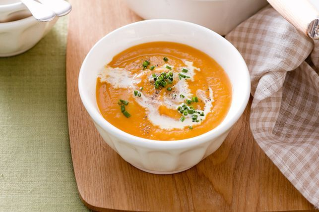

Roasted Pumpkin Soup

Ingredients
- 1 1/2 tbsp olive oil
- 3 cloves garlic, unpeeled
- 1.5kg butternut pumpkin, diced, peeled
- 20g salted butter
- 1 medium leek, trimmed, sliced
- 2 medium potatoes, peeled, chopped
- 1 litre chicken liquid stock
- 1 tbsp chopped fresh chives
- Ciabatta bread, sliced, toasted, to serve
Preparation Time
1 hr
Instructions
-
Preheat oven to 200°C /180°C fan-forced. Line 2 large baking trays with
baking paper. Place pumpkin and garlic in a bowl. Add oil. Season with
salt and pepper. Toss to coat. Arrange pumpkin mixture, in a single
layer, on prepared tray. Bake for 40 minutes or until pumpkin is golden
and tender.
- Squeeze garlic cloves from skin. Reserve. Discard skin.
-
Melt butter in a large saucepan over medium-high heat. Add leek. Cook,
stirring, for 3 minutes or until leek has softened.
- Add potato. Cook, stirring, for 5 minutes.
-
Add stock and 2 cups cold water. Season with pepper. Cover. Bring to the
boil. Reduce heat to medium-low. Simmer for 15 minutes or until potato
is tender.
-
Stir in roasted pumpkin and garlic. Cook for 5 minutes or until heated
through. Set aside for 5 minutes to cool slightly.
-
Blend pumpkin mixture, in batches, until smooth. Return to pan over low
heat. Cook, stirring, for 2 to 3 minutes or until heated through. Ladle
into serving bowls. Drizzle with cream and sprinkle with chives. Serve
with toasted ciabatta slices.